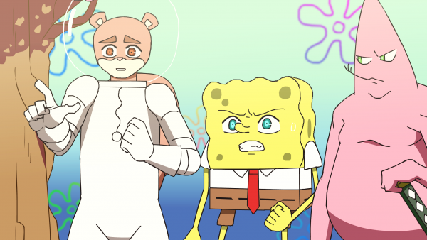

The Best Animes I've Watched

I have watched many different animes through my life. There is always a debate on what the best anime is for every year or even in all time but, I will be talking about my favorites that I have watched. Anime has been something I have been watching since I was young and as someone in their early 20s now, I have seen many different ones in many different genres. Below I will be talking about my favorites.
